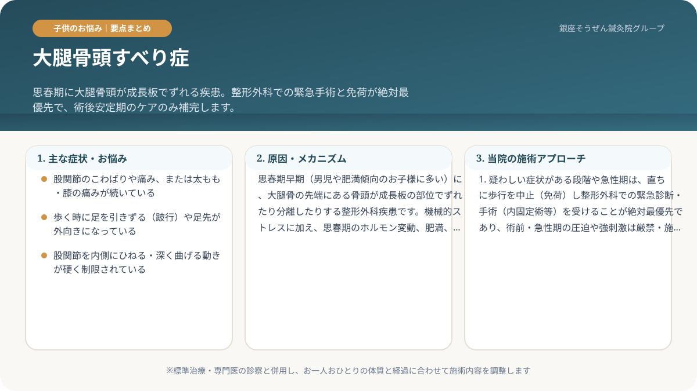

大腿骨頭すべり症の鍼灸
思春期に大腿骨頭が成長板でずれる疾患。整形外科での緊急手術と免荷が絶対最優先で、術後安定期のケアのみ補完します。
まず知っておきたい要点と改善の流れ

思春期早期（男児や肥満傾向のお子様に多い）に、大腿骨の先端にある骨頭が成長板の部位でずれたり分離したりする整形外科疾患です。機械的ストレスに加え、思春期のホルモン変動、肥満、遺伝、甲状腺機能低下などの内分泌障害や栄養不足による成長板の脆弱化が関与します。股関節痛だけでなく太ももや膝への放散痛として現れやすく誤診に注意が必要です。早期の免荷とスクリュー内固定術などの手術、術後の段階的リハビリが不可欠です。
このようなお悩みはありませんか？
- ✓股関節のこわばりや痛み、または太もも・膝の痛みが続いている
- ✓歩く時に足を引きずる（跛行）や足先が外向きになっている
- ✓股関節を内側にひねる・深く曲げる動きが硬く制限されている
- ✓手術・免荷後のリハビリ期に周囲の筋緊張を穏やかにほぐしたい
当院の施術アプローチ・改善の流れ
なぜ鍼灸で改善へ向かうのか？（作用機序の図解）
大腿骨頭すべり症に対する鍼灸は、「刺さない小児はり」による皮膚感覚〜自律神経の鎮静機序を通じて、お体本来の回復力を引き出します。

刺さない専用の「小児はり（てい鍼）」で、背中や手足の皮膚をリズミカルに優しく撫でます。
皮膚への穏やかな触覚刺激が脳へ伝わり、安心ホルモン（オキシトシン等）と副交感神経を促します。
興奮しやすい子どもの神経バランスを落ち着かせ、夜泣き・おねしょ・起立不調の土台を整えます。
保護者の方と寄り添いながら、お子さまの体調と成長ペースに合わせた無理のないケアを続けます。
院長YouTube解説・関連動画
公開日：２０２３年 ２月２１日
更新日：２０２４年 ３月 ２日
本日は大腿骨頭すべり症について解説させていただきます。
☆本記事の内容
- •大腿骨頭すべり症とは
- •大腿骨頭すべり症の原因
- •大腿骨頭すべり症の注意点
- •大腿骨頭すべり症の改善方法
- •大腿骨頭すべり症のまとめ
- •大腿骨頭すべり症は、大腿骨の端部が成長板でずれたり分離した状態
- •原因の可能性が高いと考えられていることは、成長板の脆弱化
- •大腿骨頭すべり症は、初め股関節のこわばりや軽い痛みが現れる
- •大腿骨頭すべり症の改善方法は、手術
- •大腿骨頭すべり症には急性の場合と慢性の場合がある
- •大腿骨頭すべり症に効果的なツボ
銀座そうぜん鍼灸院の宗前です。
このページを書いている私は、鍼灸師として１３年、担当した利用者様数８０，０００人を誇り、病気の休職者３００人を社会復帰できるまで回復させてきた実績があります。
大腿骨頭すべり症は、初め股関節のこわばりや軽い痛みが現れる
大腿骨頭すべり症では、初めに股関節のこわばりや軽い痛みが現れます。痛みは、膝や太ももから来ているように感じることもあります。
大腿骨頭すべり症で起こる痛みは安静にすると軽くなり、歩いたり股関節を動かしたりすると悪くなります。症状が悪くなっていくと足を引きずるようになり、股関節から太ももの内側を伝って膝まで痛みが広がります。
また、大腿骨頭すべり症では、大腿骨頭すべり症を発症した側の足が外向きにねじれるという見た目の変化も起こります。
・股関節、太もも、または膝の痛み
大腿骨頭すべり症の最も一般的な症状は、股関節の痛みですが、痛みは太ももや膝に放散することがあります。多くの場合、膝の痛みが唯一の症状であるため、誤診されることがあります。
・歩行時の異常
歩く際にびっこをひくか、異常な歩行パターンを示すことがあります。また、股関節の運動範囲が制限されるため、正常に歩くことが困難になります。
・股関節の可動域の制限
特に内旋と屈曲の動作において、股関節の可動域が制限されます。患者は股関節を正常に動かすことができず、特に内側に回転させることが難しくなります。
・足を外側に開く
立っている際や歩行時に、自然と足を外側に開く姿勢をとることがあります。これは、痛みを避けるための無意識の調整です。
大腿骨頭すべり症は、特に肥満の子どもに多く見られます。体重が増加すると、成長板にかかるストレスが増え、SCFEのリスクが高まります。
・片足への負担
片側の股関節にのみ症状が現れる場合、痛みを避けるために他方の足に体重をかけることがあります。
大腿骨頭すべり症の改善方法は、手術です。
大腿骨頭すべり症を調べる時には、X線で両方の股関節を撮影します。大腿骨頭すべり症の場合は、大腿骨頭が大腿骨の残りの部分からずれたり、分離したりしていることがわかります。
その分離した大腿骨頭の縁をそろえるためには、手術を行って金属製のネジで止めることが必要なのです。
大腿骨頭すべり症の改善方法は、主に外科的介入により行われます。改善の目的は、大腿骨頭のさらなる滑りを防ぎ、股関節の機能を保持し、将来的な合併症を最小限に抑えることです。以下に、大腿骨頭すべり症の主な改善方法を説明します。
・保存的方法
大腿骨頭すべり症の初期段階では、保存的方法が適用されることがありますが、この病気の改善においては非常に限定的です。保存的ほほうの選択肢には、活動制限やクラッチを使用して体重を支えることが含まれます。しかし、多くの場合、保存的方法だけでは症状の進行を防ぐことができないため、外科的方法が推奨されます。
・外科的方法
内固定: 最も一般的な改善法は、内固定術です。これは、滑り落ちた大腿骨頭をその位置で固定するために金属のピンやスクリューを使用する手術です。これにより、さらなる滑りを防ぎ、骨が正しい位置で癒合するのを助けます。
単側対応: 滑りが片方の股関節にのみ見られる場合でも、両側が影響を受けるリスクがあるため、片方の股関節のみに症状が見られる場合でも、予防的に反対側の股関節にも内固定を行うことがあります。
・修正手術
骨切り術: 進行した大腿骨頭すべり症や重度の変形がある場合、股関節の解剖学的な位置関係を正常に戻すために、骨切り術を行うことがあります。この手術では、骨を切断し、適切な位置に再配置して固定します。
・リハビリテーション
物理的方法: 手術後、通常、股関節の運動範囲と強度を回復させるためのリハビリテーションプログラムを受けます。物理的方法法は、股関節の機能を改善し、将来の合併症のリスクを減少させるのに役立ちます。
・合併症の管理
長期的なフォローアップ: 大腿骨頭すべり症は、将来的に関節炎などの合併症を発症するリスクが高いため、定期的なフォローアップが必要です。これには、痛みの管理や活動レベルの調整が含まれることがあります。
大腿骨頭すべり症の手術後のリハビリテーションは、股関節機能の回復と全体的な運動能力の改善を目指します。リハビリテーションのプロセスは、状態や手術の範囲に応じて異なりますが、一般的に以下の段階を含みます。
・初期段階（手術後直後）
炎症の管理: 氷の使用や軽度の圧迫包帯による腫れの管理。
疼痛管理: 痛みを管理するための適切な薬。
可動域の維持: 股関節と膝関節の運動範囲を維持するための軽度の運動。初期は非荷重運動に限定されることが多いです。
・中期段階（回復期）
筋力強化: 手術を受けた股関節の周囲の筋肉（特に臀部筋群、大腿四頭筋、ハムストリング）を強化する運動。
可動域の拡大: 徐々に股関節の運動範囲を拡大するストレッチや特定の運動を実施。
部分的荷重: 専門家の指導のもとで、徐々に荷重を増やしていきます。クラッチや歩行器などの支援具を使用しながら、安全に体重をかける方法を学びます。
・後期段階（機能回復期）
完全荷重歩行: 安定したら、支援具なしでの完全荷重歩行へ移行します。
バランスと調整訓練: バランスを改善し、正常な歩行パターンを取り戻すための運動。
活動レベルの徐々な向上: 日常生活における活動レベルの徐々な向上を目指し、最終的にはスポーツやレクリエーション活動への復帰を目標とします。
・スポーツへの復帰
スポーツ特有の訓練:従事するスポーツや活動に合わせた訓練。
徐々に負荷を増加: スポーツ活動への復帰に向けて、徐々に運動強度を増加させます。
大腿骨頭すべり症には急性の場合と慢性の場合があります。急性の場合は、骨折した時のような激しい痛みが起きることもあります。
慢性の場合は、すべりが少しずつ起こって軽い股関節の痛みが現れたり足をひきずって歩くようになったりします。
ただし、転びそうになった時などに急にすべりが悪くなることがあり、その時激しい痛みが起こることもあります。
ツボの位置と押し方
陽陵泉は、膝の下の外側にある骨の突起のすぐ下にあるくぼんでいる場所にあります。
押すときは、足を曲げた姿勢で両手の親指を使って押します。少しずつ力を強めて押していき、少しずつ力を抜きましょう。
環跳は、横向きに寝て足を深く曲げた時にできる足の付け根のしわの外側にあるツボです。力を入れるとえくぼができる場所です。
押すときは、親指の腹を使って押します。力加減は強めに押しましょう。
居髎は、腰骨の一番前と大腿骨の出っ張った部分の間にあるツボです。筋肉の張っているところにツボがあります。
押すときは親指を使って押します。ゆっくりと力を入れていきましょう。痛みが強い場合ときは無理に押さないようにすることも大事です。
小児はり・発達・夜尿・チックの全身ツボ図解
実際の施術ではお一人おひとりの体質・症状に合わせて選穴しますが、小児はり（夜尿症・チック・ADHD・喘息・かんむし）の刺さない全身ケアの臨床でよく用いられる代表的なツボの目安です。

📌 代表的なツボの詳細一覧表を開く（6穴） ▼
| ツボ名 | 位置の目安 | 主な狙い | セルフケアの注意点 |
|---|---|---|---|
| 身柱（しんちゅう） | 背中の上部、肩甲骨の間の背骨上 | 「ちりけの灸」として古くから小児の夜泣き・体力・呼吸ケアの要穴 | 刺さずに専用の小児はりや温かい手で優しく撫でます。 |
| 百会（ひゃくえ） | 頭頂部の中央 | 興奮しやすさ・チックや睡眠リズムの落ち着きサポート | お子さまが安心できるよう遊びながら優しく触れます。 |
| 天枢（てんすう） | おへその左右それぞれ外側 | 子どもの腹痛・便秘・食欲不振・乳児疝痛ケア | 時計回りに「の」の字を描くように優しく撫でます。 |
| 合谷（ごうこく） | 手の甲、親指と人差し指の間 | 緊張の緩和・自律神経バランス調整 | 痛みや怖さを与えない皮膚接触刺激で行います。 |
| 足三里（あしさんり） | 膝の下外側 | 体力づくり・胃腸の安定・成長サポート | 小児科の標準治療・発達支援と必ず併用します。 |
| 三陰交（さんいんこう） | 内くるぶしの上 | 夜尿症（おねしょ）・冷え・眠りの深さサポート | 就寝前の親子のスキンシップケアとしてもおすすめです。 |
国際査読論文の科学的エビデンス
国際的な医学データベース（PubMed・Cochrane等）で報告されている小児はり（夜尿症・チック・ADHD・喘息・かんむし）の刺さない全身ケア領域の代表的な査読済み鍼灸研究をまとめています（標準治療との併用や研究上の限界を含めて正確に掲載）。
📚 査読論文データ・PubMed出典リンクを開く（4件） ▼
| 年・研究デザイン | 対象・規模 | 主な結果 | 限界・出典 |
|---|---|---|---|
| 2022年 メタ解析 | 小児夜尿症 13試験（n=890） | 非侵襲レーザー鍼（p=0.001）・灸（p=0.004）で改善児が有意増加。デスモプレシンとは完全治癒率差なし（p=0.57）。 | GRADE確実性は非常に低い。標準治療の補完ケア。 Explore (PMID: 34893441) |
| 2025年 メタ解析 | 小児喘息 16 RCTs（n=1,675・標準治療併用） | 鍼灸併用でFEV1pred%（MD 6.02, p=0.0128）・PEF（p=0.0019）が改善、IgE・IL-4・好酸球も有意低下。 | QOL（PAQLQ）は有意差なし、バイアス懸念あり。吸入薬継続必須。 Front Med (PMID: 40740962) |
| 2024年 メタ解析（TSA付） | 小児アレルギー性鼻炎 13 RCTs（n=1,186） | 鍼＋薬物併用は薬物単独より有効性優位（RR 1.29, p<0.00001）、再発率も低下（RR 0.40）。 | 鍼単独は薬物と差なし（p=0.13）。全体的な質は低い。 Int Forum Allergy Rhinol (PMID: 39017391) |
| 2016年 メタ解析 | 小児扁桃摘出術後嘔吐（PONV）8研究 | 内関（PC6）鍼刺激群で術後の悪心・嘔吐発生が有意に減少（RR 0.77, p<0.05）。 | 観察研究含む。急性嘔吐・脱水時は小児科受診最優先。 Laryngoscope (PMID: 26864736) |
参考文献・出典
- 2022年 メタ解析（小児夜尿症 13試験（n=890））— Explore (PMID: 34893441)
- 2025年 メタ解析（小児喘息 16 RCTs（n=1,675・標準治療併用））— Front Med (PMID: 40740962)
- 2024年 メタ解析（TSA付）（小児アレルギー性鼻炎 13 RCTs（n=1,186））— Int Forum Allergy Rhinol (PMID: 39017391)
- 2016年 メタ解析（小児扁桃摘出術後嘔吐（PONV）8研究）— Laryngoscope (PMID: 26864736)
よくある質問（FAQ）
Q. 股関節や膝が痛い時にまず鍼灸でほぐしても良いですか？▼
Q. 手術後のリハビリ期に鍼灸を併用できますか？▼
あわせて読まれる関連疾患（子供のお悩み）
発達期に知的機能と適応機能の困難が生じる知的障害。多職種チーム支援を最優先し、穏やかに体調を支えます。
読み書きや計算に特異的な困難が生じる学習障害。医学的評価と個別学習支援を最優先に、学習に伴う心身の疲労を支えます。
生まれつきの脳機能発達の偏りによる発達障害。専門医と環境調整・周囲の理解を最優先に、睡眠と心身の疲れを穏やかに支えます。
規則違反や他者の権利侵害を繰り返す行為障害。児童精神科・環境調整を最優先し、神門・百会・合谷等で緊張と不眠を支えます。
成長ホルモン不足による低身長。小児内分泌科での早期精査と補充療法を最優先し、生活リズムを支えます。
深い眠りからの不完全な覚醒で混乱する錯乱性覚醒。睡眠環境の整備と自律神経の切り替えを穏やかに支えます。
CLINICAL RECOVERY CASES
✨ 実際の臨床改善事例・回復経過を見る
銀座本院をはじめ各院での実際の改善事例を症状別に絞り込んでご確認いただけます。
おひとりで悩まず、まずはご相談ください
銀座本院・川口・大宮・横浜・博多・田無の各院でご予約を承っております。